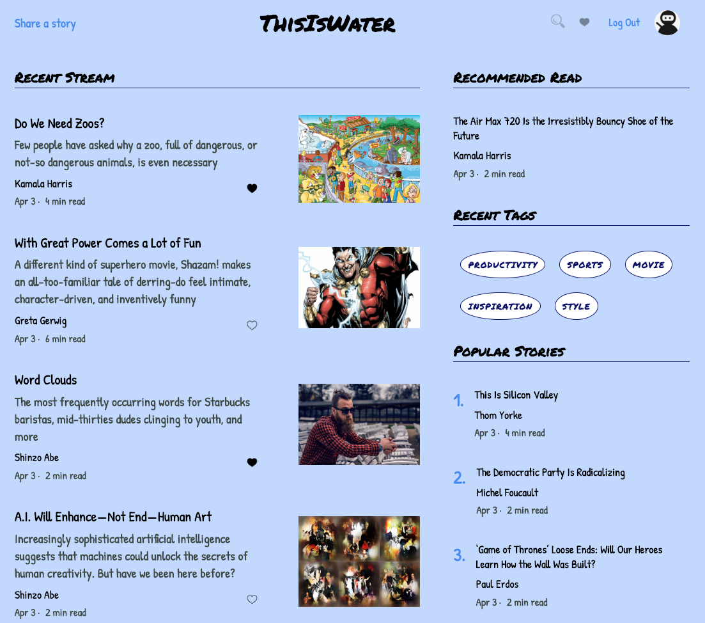
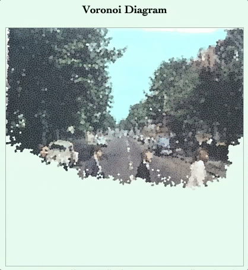
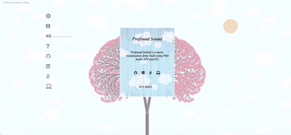

ABOUT
HISTORY
After graduating from the University of Chicago in 2016 with a bachelor’s degree in mathematics, I went on to pursue a
dream cooking in elite kitchens across America. Following a stint at Restaurant Daniel in New York City I suffered a
serious physical setback and decided to pursue a new career. Software engineering offered the perfect blend of rigor and
creativity I’d grown to love, and I haven’t looked back since.
WHY SOFTWARE ENGINEERING
During my time as a chef I worked in a myriad of kitchens each with unique flavors and takes on culinary traditions. I
found the variety and pace of this work to be exhilarating and hoped to find something that could scratch a similar itch
following my knee reconstruction surgery. When a friend mentioned that I might be good at coding, I discovered the
familiar systematic approach to thinking about problems I’d formerly encountered as a mathematician could be applied
creatively towards applications and scalable good. Now, I’m incredibly excited about the potential impact software
engineering has over a myriad of industries and would like to position myself to contribute as well.
FUN FACTS
When I'm not coding you can find me reveling in the joys of rock climbing, picking through produce at the local farmer’s
market or running through Central Park. I am a lover of exploring the outdoors, live music and my library card.
Work

THIS IS WATER
"ThisIsWater" is a full-stack single-page web application inspired by the story-sharing platform "Medium". ThisIsWater
is built using Rails/PostgreSQL on the backend and React.js/Redux on the frontend.

PIXEL PAINT
PixelPaint is a random sampling algorithm visualization tool. PixelPaint takes sampling algorithms and uses them over
visualizations to create beautiful diagrams.

PROFOUND SOUND
Profound Sound is a music visualization app that allows users to watch, listen and dance along to visual representations
of This Must Be The Place by The Talking Heads.
Skills
- JavaScript
- Ruby on Rails
- React
- Redux
 SQL
SQL- HTML
- CSS
Contact